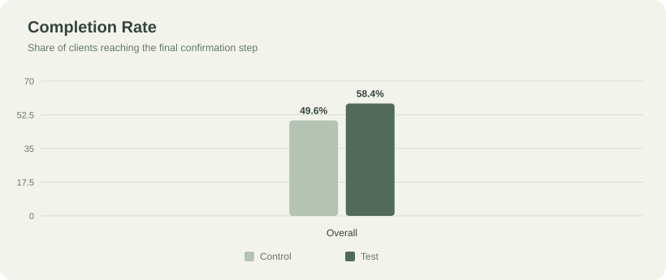
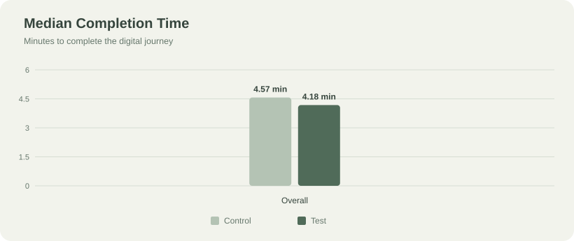
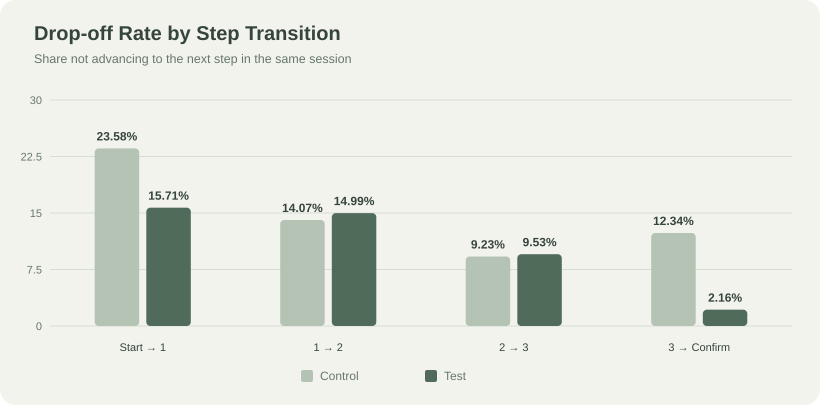
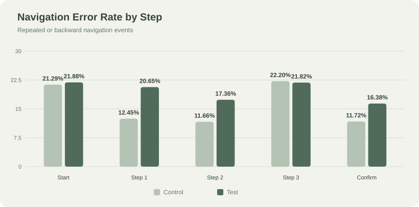

DATA ANALYTICS / CASE STUDY
Vanguard Digital Redesign.
A/B Test Analysis & Business Recommendations
01 / CONTEXT
Project Background
Vanguard, a US-based investment management company, aimed to improve its digital customer experience by introducing a more intuitive and modern user interface (UI), supported by timely in-context prompts to guide clients through a multi-step account setup and onboarding process.
To evaluate the effectiveness of the redesign, Vanguard's Customer Experience (CX) team conducted an A/B test comparing the existing interface (Control Group) with the redesigned version (Test Group), using completion rates, time spent on each step, and error rates as key performance indicators.
The experiment explored whether a smoother onboarding experience could reduce friction, increase process completion rates, and ultimately create more opportunities for customer conversion and engagement. To gain deeper insights into customer behavior, the analysis also examined median completion time and funnel drop-off rates.
This independent analytics project was completed in collaboration with two fellow analysts. Based on the available experimental data, the project aimed to evaluate the redesign's performance and develop data-driven business recommendations, while recognizing that the most appropriate decisions would depend on Vanguard's internal priorities and operational context.
02 / GOALS
Project Objectives
- Evaluate the effectiveness of Vanguard's redesigned digital interface by analyzing completion rates, time spent on each step, and error rates to determine whether the new design improves the overall customer experience.
- Develop additional performance metrics beyond the predefined KPIs, including median completion time and funnel drop-off rates, to gain deeper insights into customer behavior, identify usability issues, and provide more comprehensive, data-driven recommendations to Vanguard's Customer Experience (CX) team.
03 / DATA
Data Description
The project uses three datasets to analyze client characteristics, digital interactions, and A/B test assignments.
- Client Profiles (df_final_demo ↗): Contains client demographics, including age, gender, and account-related information.
- Digital Footprints (df_final_web_data): Records detailed client interactions with Vanguard's digital platform. The data is provided in two parts (Part 1 ↗ and Part 2 ↗), which are combined for comprehensive analysis.
- Experiment Roster (df_final_experiment_clients ↗): Identifies the clients included in the A/B testing experiment and their assigned experimental groups.
client_id.04 / APPROACH
Technical Analysis
1. Data Cleaning & Preparation
- Combined client demographics, digital interaction logs, and experiment assignments using
client_id. - Cleaned approximately 755,000 raw web events, addressing duplicate records, visit ID conflicts, and incomplete observations.
- Prepared a consolidated dataset covering 68,941 visits from 50,487 unique clients.
2. Feature Engineering & KPI Definition
- Transformed event-level interaction data into visit-level metrics to analyze customer journeys.
- Defined and calculated performance indicators, including completion rate, completion time, time spent per step, funnel drop-off rate, and error rate.
- Compared client demographics and historical engagement metrics to assess the balance between experimental groups.
3. A/B Testing & Statistical Analysis
- Applied a two-proportion z-test to assess differences in completion rates between the Control and Test groups.
- Used the Mann–Whitney U test to compare completion times.
- Evaluated statistical significance alongside the practical importance of observed performance differences.
4. Funnel & User Journey Analysis
- Analyzed progression through the multi-step digital journey to identify drop-off patterns.
- Compared navigation errors and backward movements between the two interfaces.
- Identified increased friction at the Step 1 → Step 2 and Step 2 → Step 3 transitions, informing targeted usability recommendations.
05 / INTERPRETATION
Caveats & Assumptions
Assumptions
- Experimental assignment: Clients in the Control and Test groups were assumed to have been assigned under comparable experimental conditions.
- Process completion: Reaching the final confirmation step was treated as a successful completion of the digital journey.
- Customer journey: Recorded website interactions were assumed to reasonably represent clients' behavior throughout the process.
Limitations
- Business outcomes: Higher completion rates do not necessarily translate into more funded accounts, increased assets under management, or additional revenue.
- Behavioral data: Interaction logs capture observable actions but cannot fully explain why clients abandon a process or experience difficulties.
- Long-term impact: The experiment measures short-term user behavior and does not establish whether the redesign improves long-term customer retention or engagement.
06 / AT A GLANCE
Executive Summary
Vanguard's redesigned digital interface delivered a significant improvement in customer completion rates, increasing from 49.6% to 58.4%, while reducing the median completion time by 8.5%.
However, the redesign also introduced higher navigation error rates and increased drop-offs at certain stages, suggesting that some parts of the customer journey still require improvement. Despite longer interactions at the beginning and final stages, the overall results indicate that the new experience helps more clients complete the process more efficiently.
It is recommended that Vanguard consider adopting the redesigned interface, while prioritizing usability improvements based on its business objectives. Further optimization could strengthen customer conversion, improve satisfaction, and potentially reduce future customer support costs.
07 / FINDINGS
Key Insights
1. The redesigned interface significantly improved completion rates.
The Test group achieved a completion rate of 58.4%, compared with 49.6% for the Control group, representing an 8.7-percentage-point uplift (p < 0.0001). This provides strong statistical evidence that the redesigned interface helped more clients successfully complete the digital journey.

2. Additional guidance may have improved engagement despite longer interactions at certain steps.
Median completion time decreased from 4.57 to 4.18 minutes, making the overall journey approximately 8.5% faster (p < 0.0001). Although Test users spent longer on Step 1 and Confirm, drop-off rates decreased at the beginning and final transitions. This suggests that additional guidance or more informative content may have encouraged clients to continue, making the extra interaction time potentially worthwhile.

3. Funnel analysis revealed opportunities to improve the middle stages of the journey.
The redesigned interface reduced drop-off at the Start → Step 1 and Step 3 → Confirm transitions. However, drop-off increased at Step 1 → Step 2 and Step 2 → Step 3, indicating that the middle stages may still create confusion or friction. These findings suggest prioritizing improvements to Steps 1–2 while preserving the elements that encourage users to start and complete the process.

4. Higher completion rates came with increased navigation errors.
The overall error rate increased from 16.6% to 20% in the Test group. Errors were significantly higher at Start, Steps 1–2, and Confirm, while Step 3 showed no significant difference. This suggests that although the redesign helped more clients finish the process, some interactions may still require clearer instructions or simpler navigation.

5. A more intuitive digital experience could potentially reduce customer support costs.
Historical support calls averaged 3.13 per client in the Control group and 3.06 in the Test group over the previous six months. While this difference was small, improving usability and reducing navigation difficulties could potentially lower future support demand, allowing Vanguard to allocate customer service resources more efficiently. Further post-launch monitoring would be needed to validate this potential benefit.
08 / BUSINESS DECISIONS
Business Impact & Recommendations
The redesigned interface demonstrated clear improvements in completion rates and overall process efficiency. However, the most appropriate next steps depend on Vanguard's business priorities, as improvements in conversion, customer satisfaction, and operational efficiency may require different approaches.
1. If the priority is Customer Conversion
The redesigned interface achieved a substantially higher completion rate, suggesting that it is more effective at guiding clients through the digital journey. If increasing successful process completions is the primary objective, adopting the new UI would be a reasonable next step, supported by continued performance monitoring.
2. If the priority is Customer Satisfaction
Higher navigation error rates and increased drop-offs during the middle stages indicate that some aspects of the redesigned experience may still frustrate users. Improvements to Steps 1–2 and the transition to Step 3 should therefore be prioritized, alongside usability testing and customer satisfaction surveys to better understand the causes of friction.
3. If the priority is Operational Efficiency
A more intuitive interface could potentially reduce the need for customer support by helping clients complete tasks independently. However, the available support-call data reflects historical customer behavior rather than the direct impact of the redesign. Tracking process-related support requests, resolution times, and support costs after implementation would help determine whether UX improvements translate into operational savings.
Overall Recommendation
The findings support the potential adoption of the redesigned interface, but implementation priorities should be aligned with Vanguard's strategic objectives. Given the limited visibility into internal business goals, customer feedback, and operational costs, these recommendations provide a data-driven starting point for further evaluation rather than a definitive implementation plan.